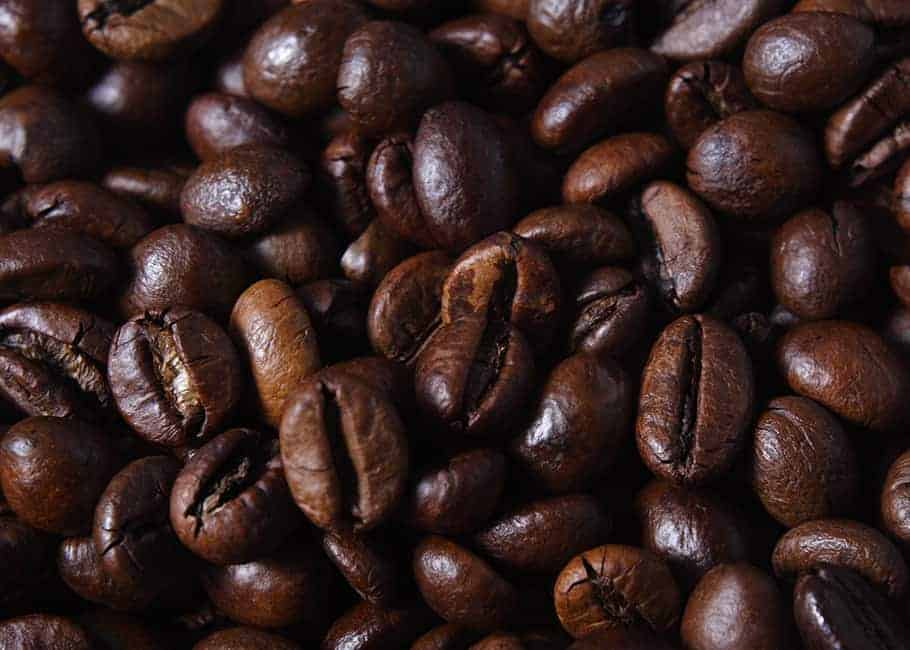

El café es la bebida que se obtiene a partir de los granos tostados y molidos de los frutos de la planta del café (cafeto); es altamente estimulante por su contenido de cafeína,1 una sustancia psicoactiva. Este producto es uno de los más comercializados del mundo y una de las tres bebidas más consumidas del mundo (junto con el agua y el té). Suele tomarse durante el desayuno, después de éste o incluso como único desayuno, aunque también se suele tomar en la merienda, o después del almuerzo o cena para entablar conversaciones o solo por costumbre. Es una de las bebidas sin alcohol más socializadoras en muchos países. El gusto por el café no es espontáneo, sino que debe cultivarse, puesto que su sabor es fuerte y amargo. El cafeto es originario de la provincia de Kaffa, en las tierras altas de Abisinia, actual Etiopía, en donde crece de forma silvestre. Las cualidades energéticas del café ya eran conocidas por la tribu Galla de Etiopía en el siglo XI, quienes lo mezclaban con grasa animal. Posteriormente, sería introducido a Arabia, de donde se expandiría al resto del mundo con el dominio turco de Anatolia.
ARÁBIGA Originaria de Etiopía, requiere un clima templado y crece idealmente en regiones montañosas, tropicales y húmedas. Se la reconoce mundialmente por su calidad superior y es la especie que más se cultiva en el mundo. Los granos de café arábico dan por resultado una bebida de aroma excelente y sabor delicioso, por ello su costo es mayor en el mercado.
ROBUSTA Originaria del Congo, crece en zonas ecuatoriales y en terrenos llanos o de poca altura. Esta planta demora hasta un año en madurar y el contenido de cafeína es superior a la especie arábiga. Se le atribuye el nombre “robusta” por ser una plantación resistente a las enfermedades y generalmente se emplea para producir cafés comerciales, es decir, café instantáneo o café molido de mezclas.
